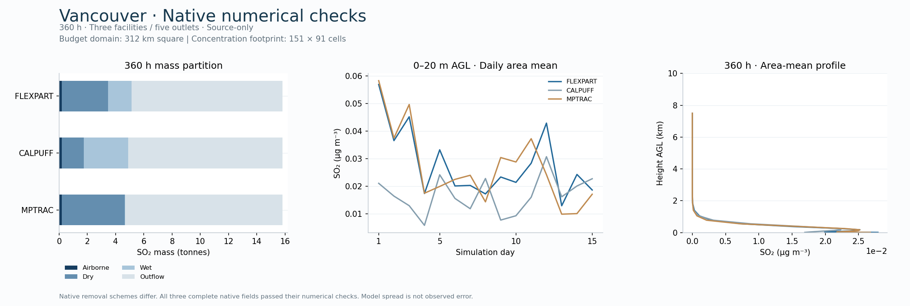

FLEXPART
Native 3D particle transport driven by WRF fields, with its terrain boundary treatment.
VANCOUVER / SCIENTIFIC COMPARISON
FLEXPART · CALPUFF · MPTRAC
Source contributions only. These are differences between models, not errors against observed ambient SO₂.
NUMERICAL DIFFERENCES
All 360 hourly means and every output cell are included. Near-ground means refer to the native 0–20 m AGL layer.
| A / B | Full-volume RMSE | 0–20 m RMSE | 0–20 m MAE | 0–20 m Bias B−A | 0–20 m Correlation |
|---|
Relative RMSE is divided by RMS(A), with A used only as a reference model. It is not an observed error, MAPE, or a percentage of the mean concentration. Local maxima are isolated space-time differences, not typical errors.
| A / B | Full relative RMSE | Ground relative RMSE | Full max |B−A| | Ground max |B−A| |
|---|
The full-volume weights are WGS84 cell area × layer thickness. Ground weights are cell area. Hourly means have equal time weights. Statistics use original native concentrations, with documented unit conversion only: no smoothing, agreement-selected mask, clipping or density rescaling. Correlation uses the same weights.
TERRAIN RESPONSE
All three cases use terrain-influenced meteorology and common terrain/height coordinates. Their native transport, turbulence, terrain-boundary and removal formulations remain different.
Native 3D particle transport driven by WRF fields, with its terrain boundary treatment.
Native puff transport and terrain-path correction (MCTADJ=3). Sub-grid hills are off (MCTSG=0); this is not building-resolving CFD.
Native particle transport using the shared model-level wind/height geometry and pressure-ground reflection.
The test switches CALPUFF terrain-path correction between 3 and 0 at 1,072 fixed points over all 360 hours. Terrain-dependent WRF wind remains active in both arms, so this is not the total effect of terrain or a full-domain accuracy bound. Both arms pass mass-budget checks; the terrain-on ledger matches the qualified production case.
Download the terrain-switch resultNATIVE DIAGNOSTICS

| Model | Emitted | Airborne at 360 h | Dry | Wet | Outflow | Residual |
|---|
The displayed concentration footprint is about 110 × 100 km and extends to 10 km AGL; it is smaller than the computational budget domain. Airborne mass outside the output footprint is not automatically outflow. CALPUFF's printed ledger has lower decimal precision. Removal schemes differ; their coefficients were not tuned to force agreement.
INDEPENDENT TRUTH
A separate flat, uniform-wind test compares all three methods with an exact advection–diffusion reference. FLEXPART: 0.913%; MPTRAC native modules: 0.830%; CALPUFF: 37.194% normalized RMSE. The CALPUFF value includes its different dispersion law; its separate own-law error is 0.649%.
Open the analytical benchmark, formulas and all 480 pairs →New: three-dimensional hill transport, native results and analytical errors →
DATA & METHODS
This scenario uses the frozen 4 November 2026, 18 UTC weather trajectory and historical source assumptions, not a newly issued forecast or a reconstruction of monitored ambient SO₂. Three selected facilities are represented by five outlets; initial background and chemistry are excluded. Source-only predictions cannot establish ambient exposure or regulatory compliance.
The 3 km meteorological terrain information does not become finer when drawn at higher resolution. All map panels use the same pointwise model terrain. CALPUFF voxel means use validated adaptive numerical integration; original unsuccessful integration attempts remain preserved. Native model closures are not identical, so this is a controlled-input model comparison, not proof of identical terrain dynamics.
The flat display interpolates concentration scalars in space, height and time before colour mapping. Every frame is rendered separately; no RGB frame blending or crossfading is used. Native fields and statistics are unchanged. This page hosts numerical summaries; the complete native 3D arrays and large meteorological inputs are retained locally.